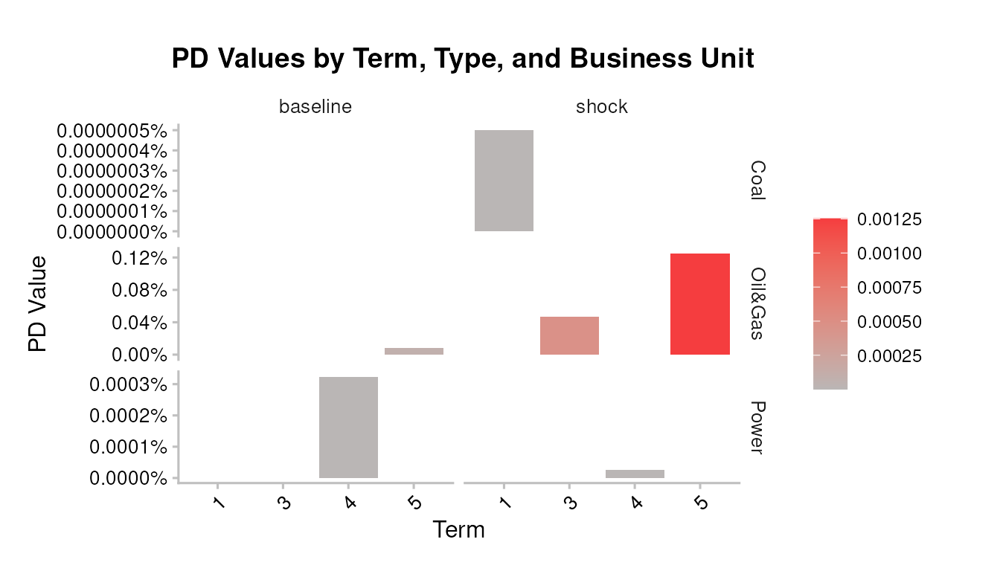
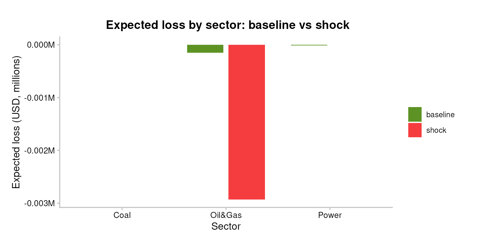
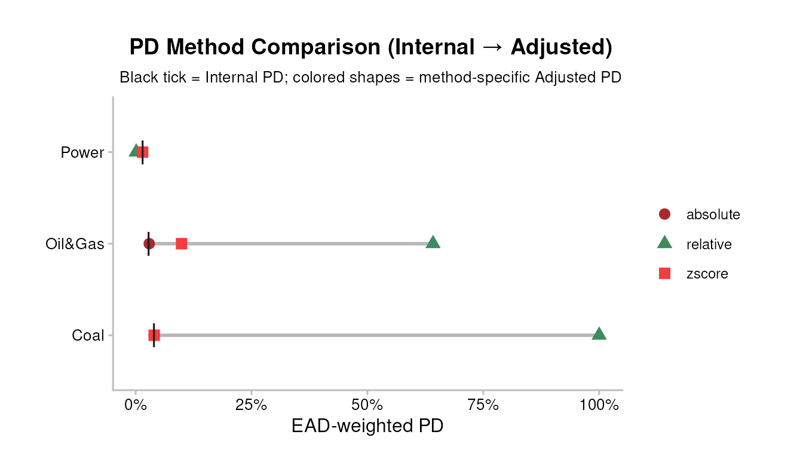
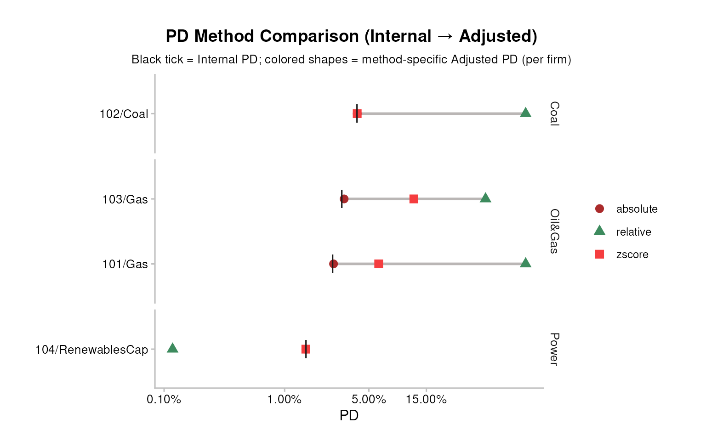
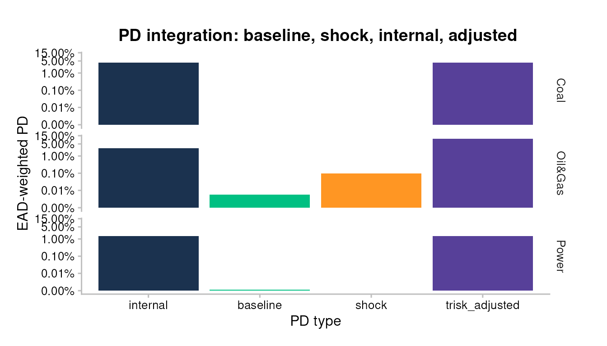
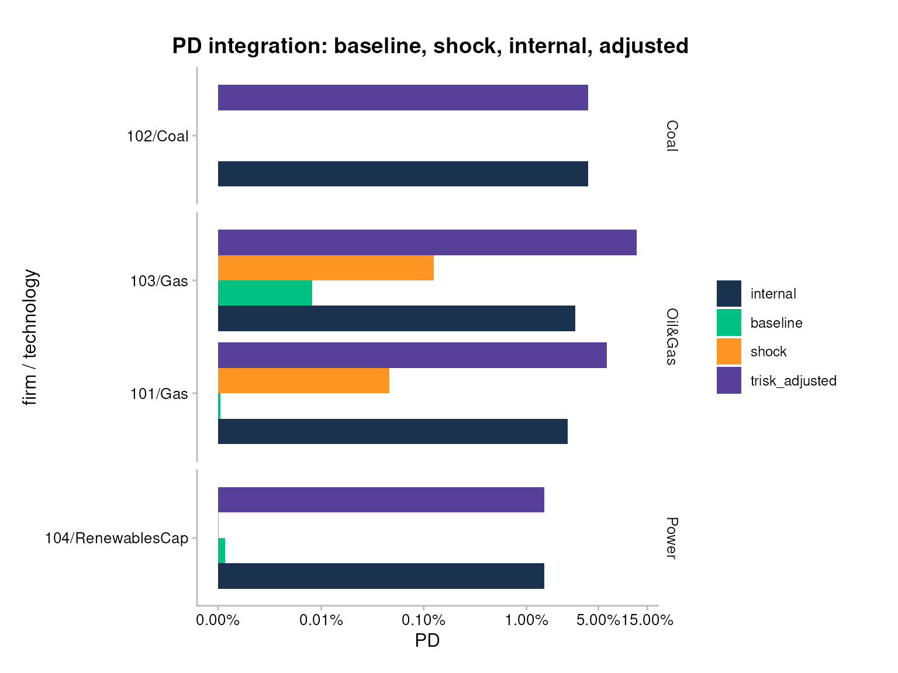
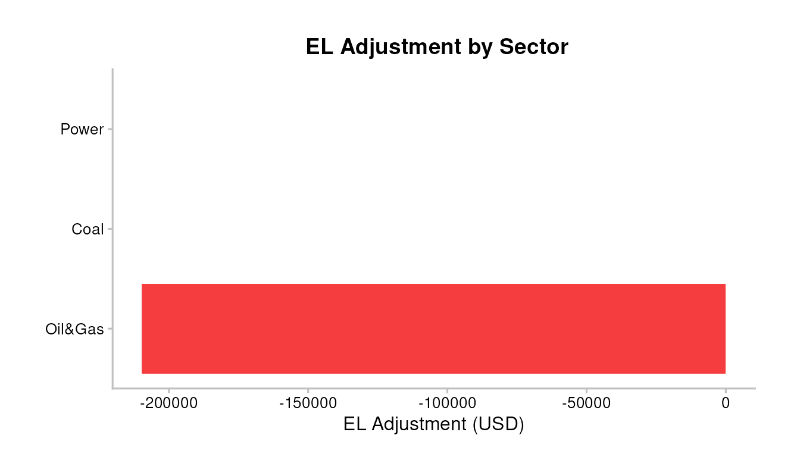
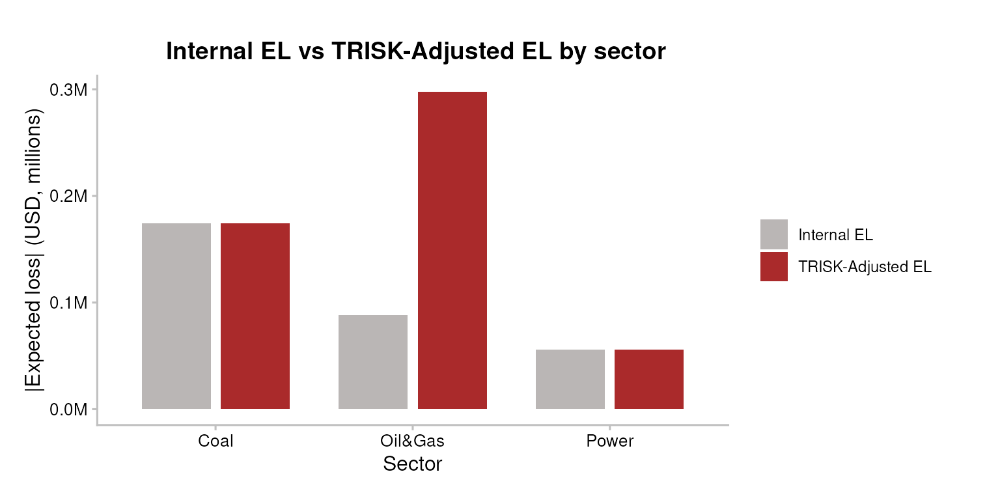

PD and EL Integration
1. Setup
Load the bundled testdata shipped with trisk.model and
trisk.analysis. The portfolio file is
portfolio_ids_internal_pd_testdata.csv, which augments the
classic portfolio_ids_testdata.csv with an
internal_pd column per exposure. That column is
mandatory — integration is meaningless without the
bank’s own PD to integrate TRISK’s shift into, so the setup fails loudly
if it’s missing.
assets_testdata <- read.csv(system.file("testdata", "assets_testdata.csv", package = "trisk.model"))
scenarios_testdata <- read.csv(system.file("testdata", "scenarios_testdata.csv", package = "trisk.model"))
fin_testdata <- read.csv(system.file("testdata", "financial_features_testdata.csv", package = "trisk.model"))
carbon_testdata <- read.csv(system.file("testdata", "ngfs_carbon_price_testdata.csv", package = "trisk.model"))
portfolio_ids_internal_pd <- read.csv(system.file("testdata", "portfolio_ids_internal_pd_testdata.csv",
package = "trisk.analysis"))
stopifnot(
"Portfolio file must include an `internal_pd` column per exposure." =
"internal_pd" %in% colnames(portfolio_ids_internal_pd),
"`internal_pd` values must be numeric in [0, 1]." =
is.numeric(portfolio_ids_internal_pd$internal_pd) &&
all(portfolio_ids_internal_pd$internal_pd >= 0 &
portfolio_ids_internal_pd$internal_pd <= 1, na.rm = TRUE)
)2. Run TRISK on the portfolio
The internal_pd column is carried alongside — TRISK only
needs the standard portfolio schema, and we keep the internal PDs as a
separate lookup table to feed into integrate_pd()
later.
analysis_data <- run_trisk_on_portfolio(
assets_data = assets_testdata,
scenarios_data = scenarios_testdata,
financial_data = fin_testdata,
carbon_data = carbon_testdata,
portfolio_data = portfolio_ids_internal_pd,
baseline_scenario = "NGFS2023GCAM_CP",
target_scenario = "NGFS2023GCAM_NZ2050"
)
#> -- Start Trisk-- Retyping Dataframes.
#> -- Processing Assets and Scenarios.
#> -- Transforming to Trisk model input.
#> -- Calculating baseline, target, and shock trajectories.
#> -- Applying zero-trajectory logic to production trajectories.
#> -- Calculating net profits.
#> Joining with `by = join_by(asset_id, company_id, sector, technology)`
#> -- Calculating market risk.
#> -- Calculating credit risk.
# The internal_pd lookup used throughout the rest of the vignette:
internal_pd_lookup <- portfolio_ids_internal_pd[, c("company_id", "internal_pd")]| company_id | sector | technology | term | pd_baseline | pd_shock | net_present_value_baseline | net_present_value_shock |
|---|---|---|---|---|---|---|---|
| 101 | Oil&Gas | Gas | 3 | 1.10e-06 | 0.0004647 | 51951.82 | 13549.28 |
| 102 | Coal | Coal | 1 | 0.00e+00 | 0.0000000 | 13648160.57 | 4317747.56 |
| 103 | Oil&Gas | Gas | 5 | 8.09e-05 | 0.0012524 | 27724344.25 | 12420187.12 |
| 104 | Power | RenewablesCap | 4 | 3.20e-06 | 0.0000003 | 141635910.26 | 202554984.40 |
3. Bank-risk context (before integration)
Before layering the integration methods on top, look at the raw
bank-risk picture that TRISK produces. The four standard portfolio plots
answer “what did the shock do?” at the equity (NPV, exposure) and credit
(PD term, EL) levels, using the same analysis_data.
pipeline_crispy_pd_term_plot(analysis_data)
#> Joining with `by = join_by(sector, term)`
Expected loss by sector (baseline vs shock), all sectors on a single row:
ad_el_preview <- compute_analysis_metrics(analysis_data)
el_by_sector <- ad_el_preview %>%
dplyr::group_by(sector) %>%
dplyr::summarise(
baseline = sum(.data$expected_loss_baseline, na.rm = TRUE),
shock = sum(.data$expected_loss_shock, na.rm = TRUE),
.groups = "drop"
) %>%
tidyr::pivot_longer(
cols = c("baseline", "shock"), names_to = "scenario", values_to = "el"
)
ggplot2::ggplot(el_by_sector,
ggplot2::aes(x = sector, y = .data$el, fill = .data$scenario)) +
ggplot2::geom_col(position = ggplot2::position_dodge(width = 0.8),
width = 0.7) +
ggplot2::scale_y_continuous(labels = scales::label_number(scale = 1e-6, suffix = "M")) +
ggplot2::scale_fill_manual(values = c(baseline = "#5D9324", shock = "#F53D3F")) +
TRISK_PLOT_THEME_FUNC() +
ggplot2::labs(x = "Sector", y = "Expected loss (USD, millions)",
fill = "Scenario",
title = "Expected loss by sector: baseline vs shock")
4. Why integration matters
TRISK recomputes PD from a Merton structural credit model. That PD level is not directly comparable to the internal PD your institution already uses; only the change from baseline to shock carries meaning. Three integration methods translate the TRISK shift into your internal PD scale.
5. Method 1 - Absolute
result_abs <- integrate_pd(analysis_data,
internal_pd = internal_pd_lookup,
method = "absolute")| company_id | sector | internal_pd | pd_baseline | pd_shock | trisk_adjusted_pd | pd_adjustment |
|---|---|---|---|---|---|---|
| 101 | Oil&Gas | 0.025 | 1.10e-06 | 0.0004647 | 0.0254636 | 0.0004636 |
| 102 | Coal | 0.040 | 0.00e+00 | 0.0000000 | 0.0400000 | 0.0000000 |
| 103 | Oil&Gas | 0.030 | 8.09e-05 | 0.0012524 | 0.0311716 | 0.0011716 |
| 104 | Power | 0.015 | 3.20e-06 | 0.0000003 | 0.0149970 | -0.0000030 |
6. Method 2 - Relative
Note: when
pd_baseline = 0the relative method returns the internal PD unchanged; the shock signal is lost on zero-baseline rows. Useabsoluteorzscoreif this matters.
result_rel <- integrate_pd(analysis_data,
internal_pd = internal_pd_lookup,
method = "relative")7. Method 3 - Z-score (Basel IRB)
The z-score method combines PDs in the normal-quantile space, preserving the non-linear relationship at distribution tails. Recommended for Basel IRB-aligned institutions.
result_zs <- integrate_pd(analysis_data,
internal_pd = internal_pd_lookup,
method = "zscore")8. Overriding internal PDs on the fly
If you want to stress-test with a hypothetical flat internal PD (for example, as a sanity check), build a vector or alternate lookup and pass it instead:
flat_internal <- rep(0.03, nrow(analysis_data))
result_custom <- integrate_pd(analysis_data,
internal_pd = flat_internal,
method = "zscore")9. Method comparison
pipeline_crispy_pd_method_comparison(analysis_data,
internal_pd = internal_pd_lookup)
Advanced: firm-level and pseudo-log scale
On sparse portfolios where many firms have baseline PDs near zero (Merton underflow) and a few have visible signal, the default sector-aggregate linear view can bunch everything against zero. Two arguments open up the per-firm picture:
-
granularity = "firm"— one row per firm instead of an EAD-weighted sector aggregate. Reveals within-sector method divergence. -
scale = "pseudo_log"— x-axis usesscales::pseudo_log_trans(sigma = 1e-5). Zero-safe and spreads values across many orders of magnitude.
pipeline_crispy_pd_method_comparison(
analysis_data,
internal_pd = internal_pd_lookup,
granularity = "firm",
scale = "pseudo_log"
)
10. Integration charts
pipeline_crispy_pd_integration_bars(result_zs)
The same granularity + scale arguments work
on the bar plot:
pipeline_crispy_pd_integration_bars(
result_zs,
granularity = "firm",
scale = "pseudo_log"
)
11. EL integration
integrate_el() expects
expected_loss_baseline and expected_loss_shock
columns, which run_trisk_on_portfolio() does not produce on
its own. Call compute_analysis_metrics() first to derive
them as EAD * PD.
For the bank’s internal EL, we derive it the same way:
EAD * LGD * internal_pd.
analysis_data_el <- compute_analysis_metrics(analysis_data)
internal_el_lookup <- merge(
analysis_data_el[, c("company_id", "exposure_value_usd", "loss_given_default")],
internal_pd_lookup,
by = "company_id"
)
internal_el_lookup$internal_el <-
-internal_el_lookup$exposure_value_usd *
internal_el_lookup$loss_given_default *
internal_el_lookup$internal_pd
result_el <- integrate_el(analysis_data_el,
internal_el = internal_el_lookup[, c("company_id", "internal_el")])
# default method is "zscore" (Basel IRB-aligned, zero-safe via clipping)
pipeline_crispy_el_adjustment_bars(result_el)
Internal EL vs TRISK-Adjusted EL
Side-by-side comparison so the integration effect is visible per
group. EL is negative by package convention (loss as negative number);
abs() is applied for display so the bars read as magnitudes
of expected loss.
Per sector — all sectors on one row:
el_compare_sector <- result_el$portfolio %>%
dplyr::group_by(sector) %>%
dplyr::summarise(
`Internal EL` = sum(.data$internal_el, na.rm = TRUE),
`TRISK-Adjusted EL` = sum(.data$trisk_adjusted_el, na.rm = TRUE),
.groups = "drop"
) %>%
tidyr::pivot_longer(
cols = c("Internal EL", "TRISK-Adjusted EL"),
names_to = "el_type", values_to = "el"
) %>%
dplyr::mutate(el_abs = abs(.data$el))
ggplot2::ggplot(el_compare_sector,
ggplot2::aes(x = sector, y = .data$el_abs, fill = .data$el_type)) +
ggplot2::geom_col(position = ggplot2::position_dodge(width = 0.8),
width = 0.7) +
ggplot2::scale_y_continuous(labels = scales::label_number(scale = 1e-6, suffix = "M")) +
ggplot2::scale_fill_manual(values = c(`Internal EL` = "#BAB6B5",
`TRISK-Adjusted EL` = "#AA2A2B")) +
TRISK_PLOT_THEME_FUNC() +
ggplot2::labs(x = "Sector", y = "|Expected loss| (USD, millions)",
fill = "",
title = "Internal EL vs TRISK-Adjusted EL by sector")
Per exposure — one group of two bars per firm/technology:
el_compare_firm <- result_el$portfolio %>%
dplyr::mutate(firm = paste(.data$company_id, .data$technology, sep = "/")) %>%
dplyr::select("firm", "sector",
`Internal EL` = "internal_el",
`TRISK-Adjusted EL` = "trisk_adjusted_el") %>%
tidyr::pivot_longer(
cols = c("Internal EL", "TRISK-Adjusted EL"),
names_to = "el_type", values_to = "el"
) %>%
dplyr::mutate(el_abs = abs(.data$el))
ggplot2::ggplot(el_compare_firm,
ggplot2::aes(x = .data$firm, y = .data$el_abs, fill = .data$el_type)) +
ggplot2::geom_col(position = ggplot2::position_dodge(width = 0.8),
width = 0.7) +
ggplot2::scale_y_continuous(labels = scales::label_number(scale = 1e-6, suffix = "M")) +
ggplot2::scale_fill_manual(values = c(`Internal EL` = "#BAB6B5",
`TRISK-Adjusted EL` = "#AA2A2B")) +
ggplot2::facet_grid(. ~ sector, scales = "free_x", space = "free_x") +
TRISK_PLOT_THEME_FUNC() +
ggplot2::theme(axis.text.x = ggplot2::element_text(angle = 45, hjust = 1)) +
ggplot2::labs(x = "Firm / technology", y = "|Expected loss| (USD, millions)",
fill = "",
title = "Internal EL vs TRISK-Adjusted EL by exposure")
12. Portfolio-level KPIs
pipeline_crispy_pd_kpi_table(result_zs$aggregate)| Total Exposure (USD) | Weighted Internal PD | Weighted Adjusted PD | Weighted PD Adjustment (pp) | Adjustment % |
|---|---|---|---|---|
| 21.06M | 2.592% | 4.461% | +1.868 pp | 72.077% |
pipeline_crispy_el_kpi_table(result_el$aggregate)| Total Exposure (USD) | Total Internal EL | Total Adjusted EL | EL Adjustment | Adjusted EL (bps) |
|---|---|---|---|---|
| 21.06M | -318.1K | -527.8K | -209.7K | 250.6 bps |
13. Sector breakdown
pipeline_crispy_el_sector_breakdown_table(result_el$portfolio)| sector | Direction | Count | Exposure | Internal EL | Adjusted EL | EL Adjustment | EL/EAD (bps) |
|---|---|---|---|---|---|---|---|
| Coal |
|
1 | 6.23M | -174.4K | -174.4K | -0.00 | 280.0 bps |
| Oil&Gas | ↑ | 2 | 5.57M | -88.1K | -297.8K | -209.7K | 534.9 bps |
| Power |
|
1 | 9.26M | -55.6K | -55.6K | -0.00 | 60.0 bps |